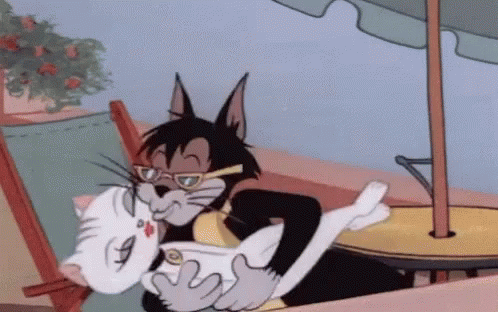

Hola Alex. Hoy hace dos años que nos vimos por primera vez. Te escribo esta carta en hipertexto para decirte que (todavía) me gustas. Me gusta ir contigo en moto y agarrarme a tu barriga. Me gusta regalarte tulipanes naranjas. Me gusta cenar pizza contigo en la cama, y que no distingas el plástico quemado del queso fundido, o el acento canario del acento andaluz. Me gusta darte azotes en el culo y que tú me los des también. Me gusta dormir contigo. Cuando dormimos juntos me gusta mucho hacer la cuchara y que me des besos en la nuca. En invierno es cuando más me gusta porque siempre estás calentito y tus brazos son como un edredón. Me gusta que siempre me dejes la última patata o el mejor cachito de todo. Tú eres la única persona a la que le dejo el mejor cacho porque realmente quiero que te lo comas tú. Me gusta que quieras tanto a tu madre. Me gusta mucho tu sentido del humor y que hagamos el tonto. Me gusta cuando nos peleamos de mentira y cuando me haces cosquillas. Me gusta cuando doblas la ropa. Me gusta ir contigo al Ikea e imaginarme cómo sería nuestra casa. Me gustan mucho tus manos y tus brazos. Me gusta mucho tu bigote y como te lo tocas cuando estás pensando. Me gusta el hoyuelo de tu barbilla. Me gustan tus dientes y como masticas la comida. Me gustan tus ojos porque son muy tiernos y expresivos. Cuando sonríes se te nota mucho en los ojos, son lo que más me gusta de tí. Me gusta cuando cantas mientras tocas la guitarra. Me gusta cuando me besas o cuando me das la mano sin que yo me lo espere. Me gusta que tengas tanta paciencia cuando estoy de mal humor y que me enseñes a ser más amable. Me gusta como te queda el color amarillo. Me encanta cuando cocinas y lo bien que te sale la tortilla de patata. Me gusta como bailas, nunca he visto a nadie bailar como tú. Me gusta que me des siempre un empujoncito para hacer cosas que me dan miedo como subirme al canguro. Contigo es más fácil hacer este tipo de cosas porque eres la persona en la que más confío en el mundo. Me gusta que seas tan curioso y tan inteligente. Me gusta que juegues con mi gato. Me gusta que guardes tus vinilos en fundas de plástico y lo rápido que tecleas. Me gusta que nos rasquemos la marca de los calcetines, y que siempre lleves vino a las comidas y que dejes propina en los restaurantes. Me gusta que tengas tan buen gusto hasta para lo que no te gusta. Me gusta cuando me besas los muslos y cuando me das lametones. Me gusta cuando hablas en ruso y los pelos rubios de tu bigote y tus lunares rojos y tus calzoncillos holgados. Me gustas hasta cuando me aturullo y lo único que quiero es esconderme en un pozo, porque incluso en esos momentos sé que al cabo de unos días echo de menos todo lo que me gusta de tí. Y echo de menos tumbarme contigo y que me huelas el pelo.